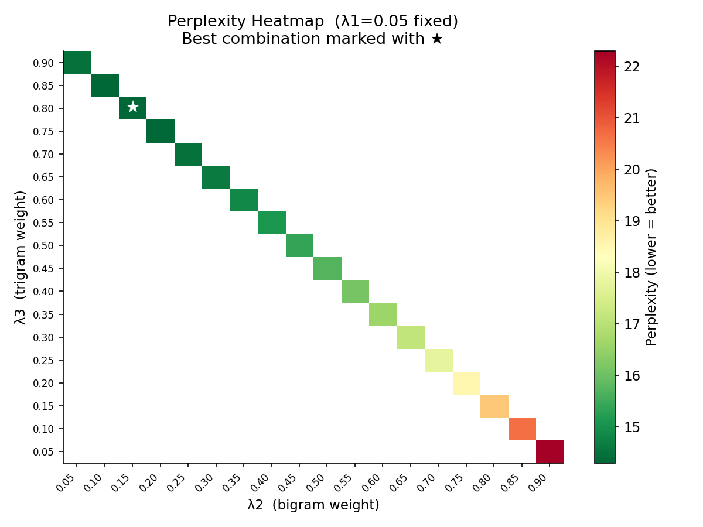
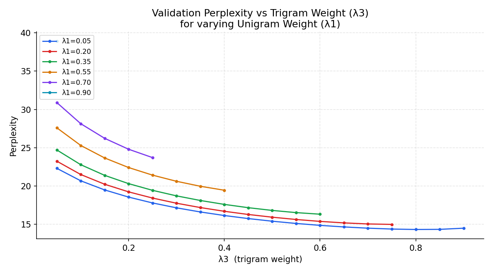
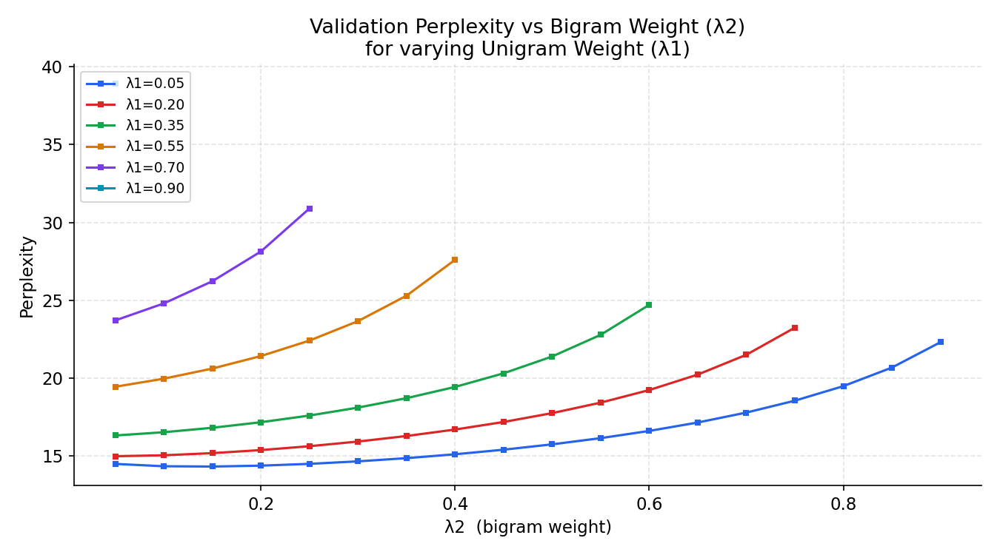
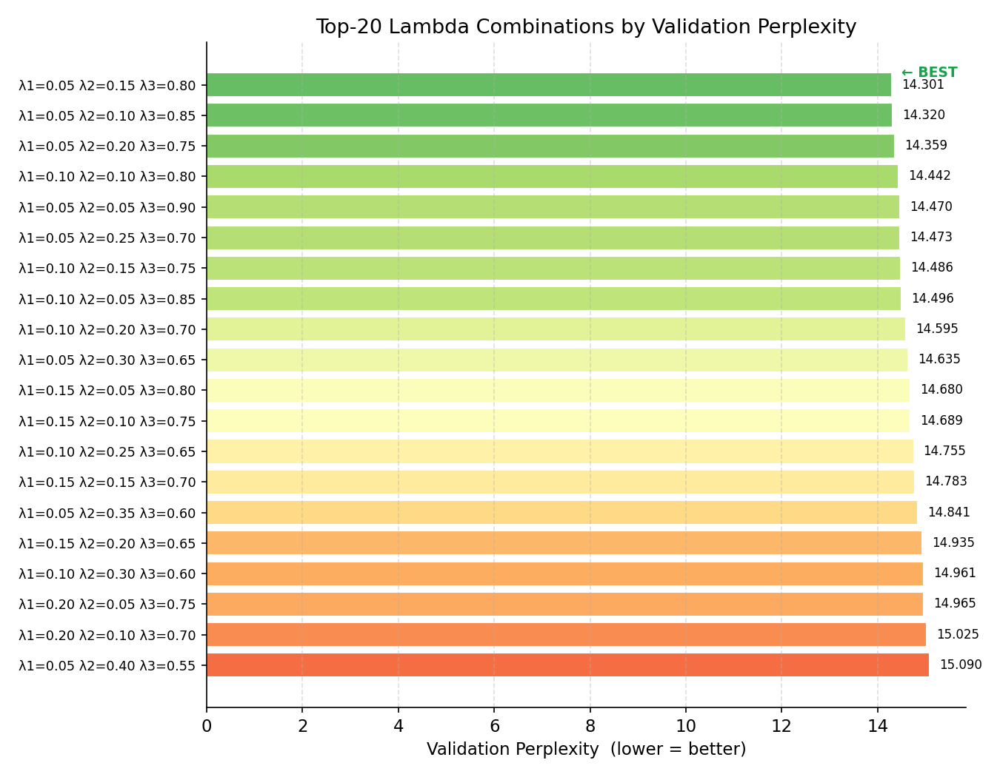
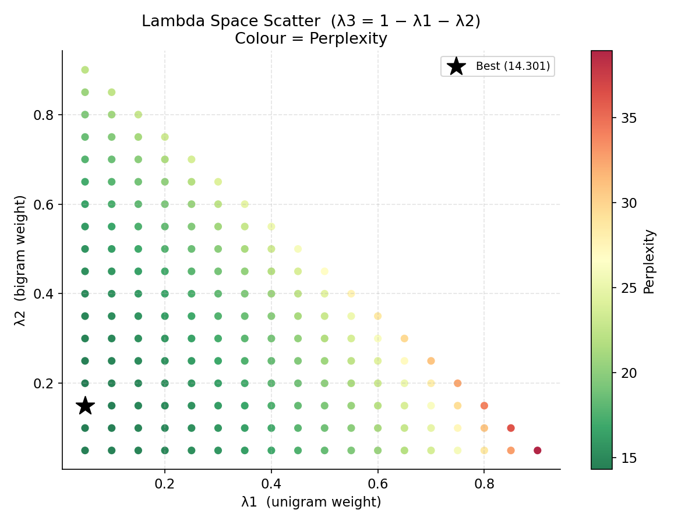

<!DOCTYPE html>
<html lang="en">
<head>
<meta charset="UTF-8">
<title>Trigram Model — Hyperparameter Evaluation</title>
<style>
  body  { font-family: 'Segoe UI', Arial, sans-serif; max-width: 960px;
           margin: 40px auto; color: #1e293b; line-height: 1.6; }
  h1    { color: #1d4ed8; border-bottom: 2px solid #1d4ed8; padding-bottom: 6px; }
  h2    { color: #1e40af; margin-top: 40px; }
  h3    { color: #334155; }
  table { border-collapse: collapse; width: 100%; margin: 16px 0; }
  th,td { border: 1px solid #cbd5e1; padding: 8px 12px; text-align: center; }
  th    { background: #1d4ed8; color: white; }
  tr:hover { background: #f1f5f9; }
  .formula  { background: #f0f9ff; border-left: 4px solid #0284c7;
               padding: 12px 20px; font-family: monospace; font-size: 1.05em; }
  .best-box { background: #f0fdf4; border: 2px solid #16a34a; border-radius: 8px;
               padding: 16px 24px; margin: 20px 0; }
  .best-box span { color: #15803d; font-weight: bold; font-size: 1.1em; }
  img   { max-width: 100%; border: 1px solid #e2e8f0; border-radius: 6px;
           margin: 12px 0; }
  pre   { background: #f8fafc; border: 1px solid #e2e8f0; border-radius: 6px;
           padding: 14px; overflow-x: auto; font-size: 0.9em; }
  .grid { display: grid; grid-template-columns: 1fr 1fr; gap: 16px; }
</style>
</head>
<body>

<h1>Urdu Trigram Language Model — Hyperparameter Evaluation Report</h1>

<h2>1. Model Overview</h2>
<p>
  This report documents the hyperparameter sweep performed on a
  <strong>trigram language model</strong> trained on an Urdu story corpus
  using <strong>Maximum Likelihood Estimation (MLE)</strong> with
  <strong>linear interpolation</strong>.
</p>

<h3>Interpolation Formula</h3>
<div class="formula">
P<sub>interp</sub>(t<sub>i</sub> | t<sub>i-2</sub>, t<sub>i-1</sub>) =
  &lambda;3 &middot; P(t<sub>i</sub> | t<sub>i-2</sub>, t<sub>i-1</sub>)  +
  &lambda;2 &middot; P(t<sub>i</sub> | t<sub>i-1</sub>)  +
  &lambda;1 &middot; P(t<sub>i</sub>)<br>
<br>
where &lambda;1 + &lambda;2 + &lambda;3 = 1.0
<br><br>
&lambda;1 = unigram weight &nbsp;&nbsp;
&lambda;2 = bigram weight  &nbsp;&nbsp;
&lambda;3 = trigram weight
</div>

<h3>Special Tokens</h3>
<table>
  <tr><th>Token</th><th>Unicode</th><th>Meaning</th><th>Role in generation</th></tr>
  <tr><td>EOS</td><td>U+0003</td><td>End of sentence</td><td>Sentence boundary marker</td></tr>
  <tr><td>EOP</td><td>U+0004</td><td>End of paragraph</td><td>Paragraph boundary marker</td></tr>
  <tr><td>EOT</td><td>U+0005</td><td>End of story</td><td><strong>Terminates generation</strong></td></tr>
</table>

<h2>2. Corpus & Tokenizer Statistics</h2>
<table>
  <tr><th>Property</th><th>Value</th></tr>
  <tr><td>BPE Vocabulary size</td><td>250</td></tr>
  <tr><td>Total lambda combinations tested</td><td>171</td></tr>
  <tr><td>Validation split</td><td>Last 10% of corpus</td></tr>
  <tr><td>Sweep step size</td><td>0.05</td></tr>
  <tr><td>Worst perplexity seen</td><td>69.8426</td></tr>
  <tr><td>Best perplexity seen</td><td>20.0387</td></tr>
</table>

<h2>3. Optimal Hyperparameters</h2>
<div class="best-box">
  <span>λ1 (unigram) = 0.050</span><br>
  <span>λ2 (bigram)  = 0.250</span><br>
  <span>λ3 (trigram) = 0.700</span><br><br>
  Validation Perplexity = <span>20.0387</span><br><br>
  <em>These weights were selected by exhaustive grid search minimising
  held-out perplexity on the last 10% of the corpus.</em>
</div>

<h2>4. Top-10 Lambda Combinations</h2>
<table>
  <tr><th>Rank</th><th>λ1</th><th>λ2</th><th>λ3</th><th>Perplexity</th></tr>
  <tr style='background:#d1fae5;font-weight:bold;'><td>1</td><td>0.050</td><td>0.250</td><td>0.700</td><td>20.0387</td></tr>
<tr><td>2</td><td>0.050</td><td>0.300</td><td>0.650</td><td>20.0731</td></tr>
<tr><td>3</td><td>0.050</td><td>0.200</td><td>0.750</td><td>20.1327</td></tr>
<tr><td>4</td><td>0.050</td><td>0.350</td><td>0.600</td><td>20.2128</td></tr>
<tr><td>5</td><td>0.100</td><td>0.200</td><td>0.700</td><td>20.3803</td></tr>
<tr><td>6</td><td>0.100</td><td>0.250</td><td>0.650</td><td>20.3819</td></tr>
<tr><td>7</td><td>0.050</td><td>0.150</td><td>0.800</td><td>20.4022</td></tr>
<tr><td>8</td><td>0.050</td><td>0.400</td><td>0.550</td><td>20.4473</td></tr>
<tr><td>9</td><td>0.100</td><td>0.300</td><td>0.600</td><td>20.5027</td></tr>
<tr><td>10</td><td>0.100</td><td>0.150</td><td>0.750</td><td>20.5321</td></tr>

</table>

<h2>5. Evaluation Plots</h2>

<h3>5a. Perplexity Heatmap (λ2 vs λ3, λ1 fixed at 0.05)</h3>

<p>
  Each cell shows validation perplexity for a (λ2, λ3) pair with the
  unigram weight fixed at the optimal λ1. Green = lower perplexity = better.
  The star ★ marks the globally best combination.
</p>

<h3>5b. Perplexity vs Trigram Weight (λ3)</h3>

<p>
  Each line corresponds to a different fixed λ1. The optimal λ3 sits in
  the sweet spot where the trigram's specificity outweighs its sparsity.
</p>

<h3>5c. Perplexity vs Bigram Weight (λ2)</h3>

<p>
  Shows how bigram weighting affects perplexity across different unigram
  priors.
</p>

<h3>5d. Top-20 Combinations</h3>


<h3>5e. Lambda Space Scatter</h3>

<p>
  Every tested (λ1, λ2) pair coloured by perplexity. The star marks the
  optimal point. The lower-right region (high λ2, low λ1) tends to
  perform better because bigram context is denser than trigram context
  for a 250-token BPE vocabulary.
</p>

<h2>6. Sample Generation with Optimal Weights</h2>
<p>Generated text using prompt <code>"ایک دفعہ"</code> with optimal lambda weights:</p>
<pre>ایک دفعہد کی مد کو چھڑی سے پوچھا کہ تم اتنے سے پہلے کر آنے والے ان کا استعالیہ بیگم ہوتے ہی اس نے وہاں سے چلا گیا اور اچھا ٹھیک ہے۔   بات بتایا۔   ات کی قینچا۔   اگر ایسا بچہ تھا، جسمندہ رہی۔ یہ دونوں بعد اسے احساس دلچسپی محبت سے </pre>

<h2>7. Interpretation</h2>
<p>
  <strong>Why does λ2 (bigram) often dominate?</strong><br>
  With a 250-token BPE vocabulary, the corpus produces ~144K unique trigrams
  out of a possible 250³ = 15.6M. Most trigram contexts are therefore sparse
  (seen once or never). The bigram distribution (~18K unique entries) provides
  a much denser, more reliable signal. The optimal λ weights reflect this:
  trigram precision is useful only when context has been seen before, and the
  interpolation formula handles the fallback gracefully.
</p>
<p>
  <strong>EOT-terminated generation</strong><br>
  The model generates tokens until the EOT token (U+0005) is produced or
  the max-token cap is reached. EOS (U+0003) and EOP (U+0004) are treated
  as regular vocabulary items, so the model naturally learns sentence and
  paragraph boundary statistics from the corpus.
</p>

<hr>
<p style="color:#94a3b8;font-size:0.85em;">
  Generated by evaluate.py — Urdu Story Generation Project
</p>
</body>
</html>